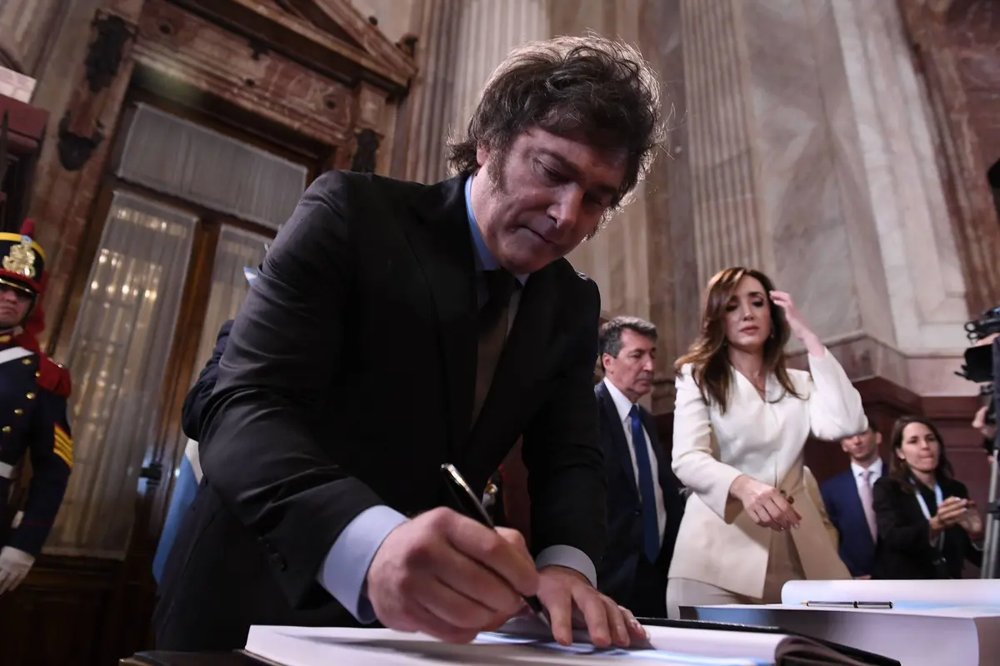

Javier Milei’s campaign promises and background
Javier Milei, the first libertarian president of Argentina promised various reforms that would solve the country's economic problems. Milei was elected and sworn into office in December of 2023. Javier Milei identifies himself politically as an “anarcho capitalist”, before running for president he was known for showing up on talk shows as a token conservative, and he is an economist. He said he would cut down government spending by reducing public assistance, half the number of government ministries from 18 to 9, as well as privatizing as many state owned companies as possible. He plans on dollarizing the country, and has gone on to say that the overall plan is a “free competition of currencies”.
Actions Milei has taken and their consequences
Milei has devalued the Argentine peso to 800 Argentine pesos to the US dollar. His plans to privatize state owned companies has been pushed back by congress. Since taking office inflation doubled but then began to slow down, poverty rates have reached 57%, and retail sales have fallen.
Reflection on Javier Milei’s policies
An issue as large as this will obviously not be fixed overnight, as has been said by every other Argentine president that has taken office during the past 20 years. Milei has gone out of his way to say that things will be getting worse before they get better, calling it “hard medicine” that Argentinians need to swallow. As seen in the recent statistics for poverty rates in Argentina, that seems to be the case. That being said, the steps Milei is taking are radically different to what has been done in the past, which never worked. Apparently economists have been saying this is what should have been done for years now. Of course, that was all hypothetical, and only time will tell if Milei can really make a difference for Argentina. You also have to factor in that most people in congress do not agree with actions Milei is trying to take, as seen in the lack of support his bills have had in congress which means that the likelihood of his plans moving forwards are up for debate. In an interview with Wall Street Journal he said there is no plan b in the case that it doesn’t work out, citing that things should be done right the first time around. Javier Milei’s plans for Argentina are a gamble, that is the one thing that is for sure.